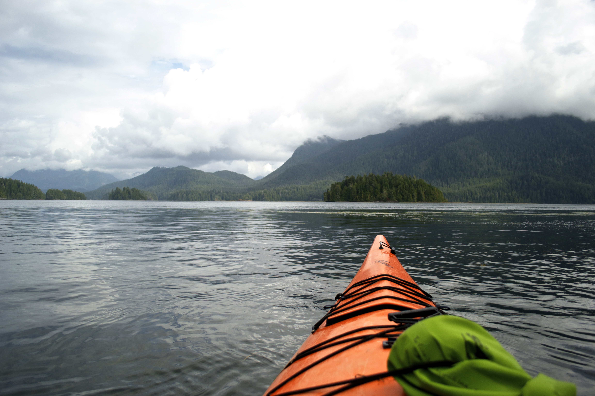
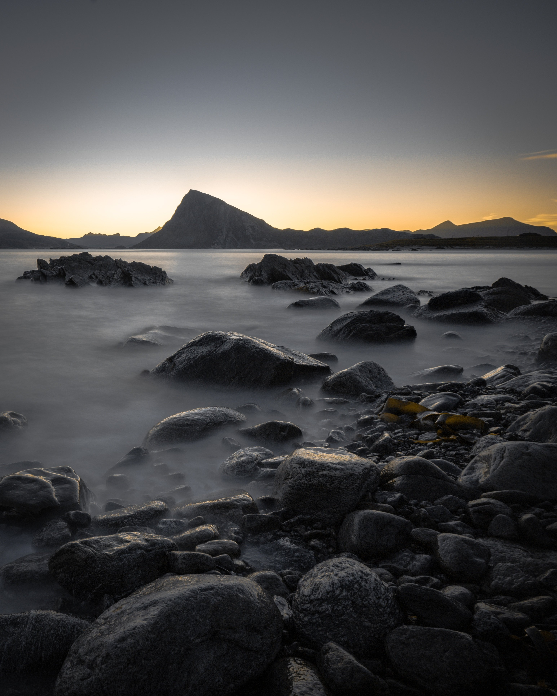
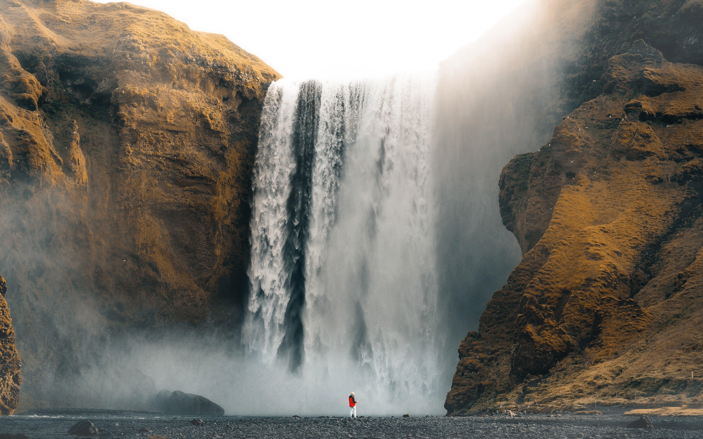
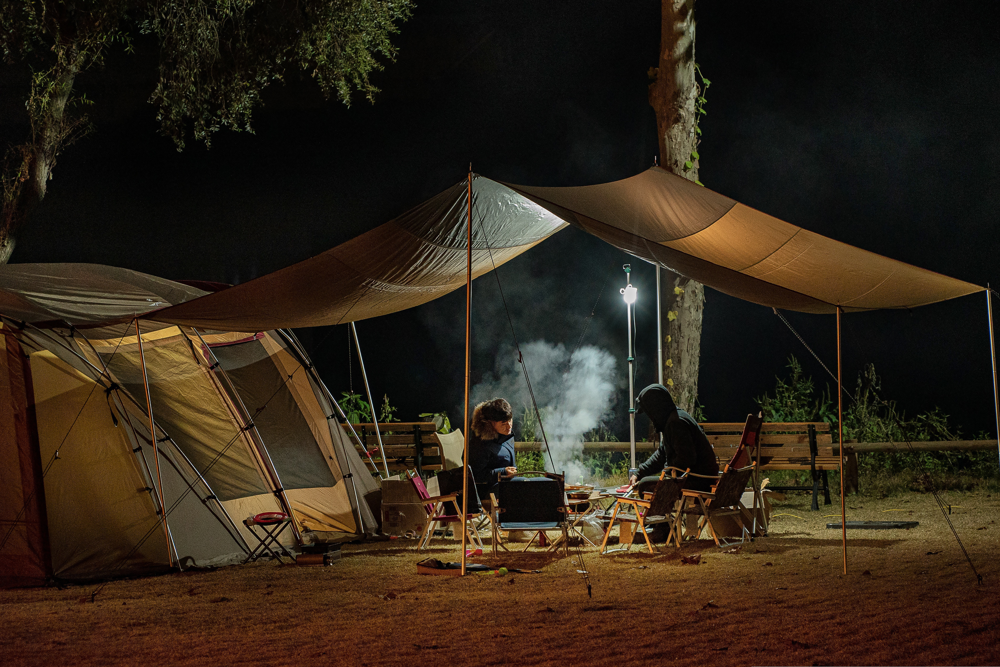
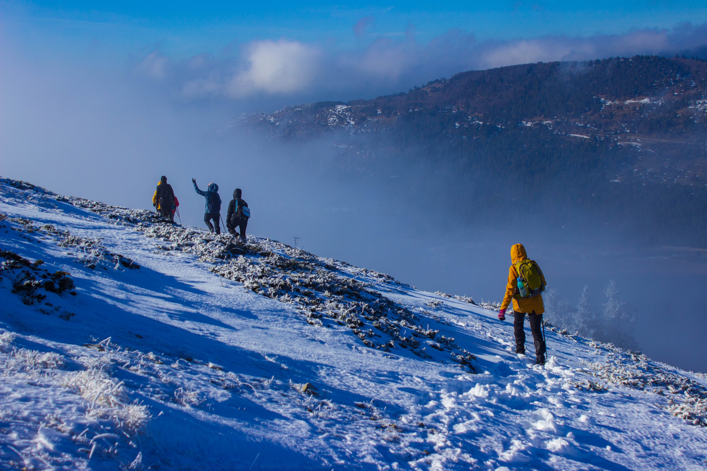
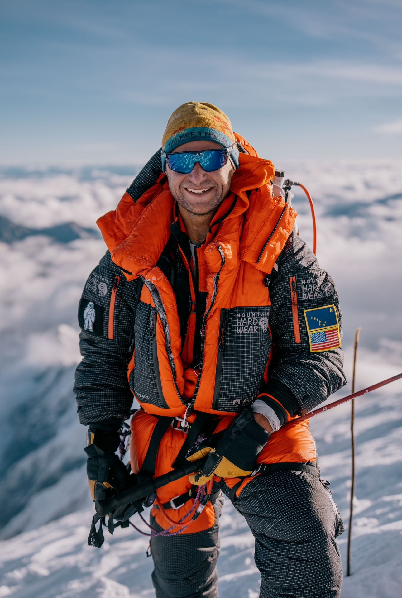
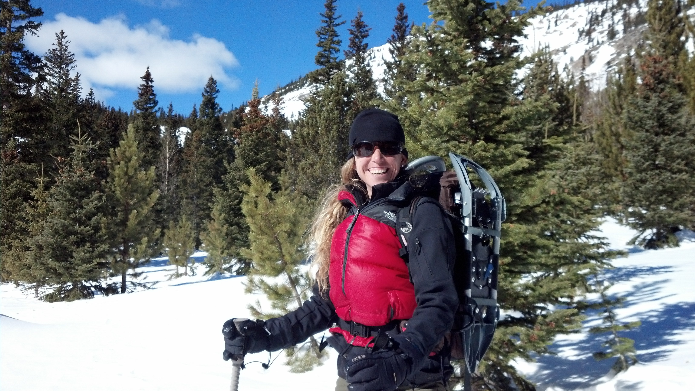
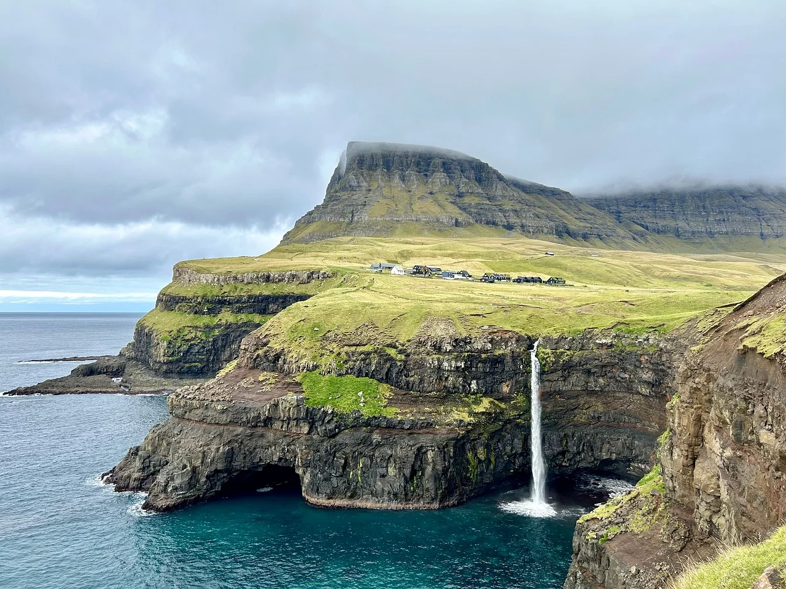
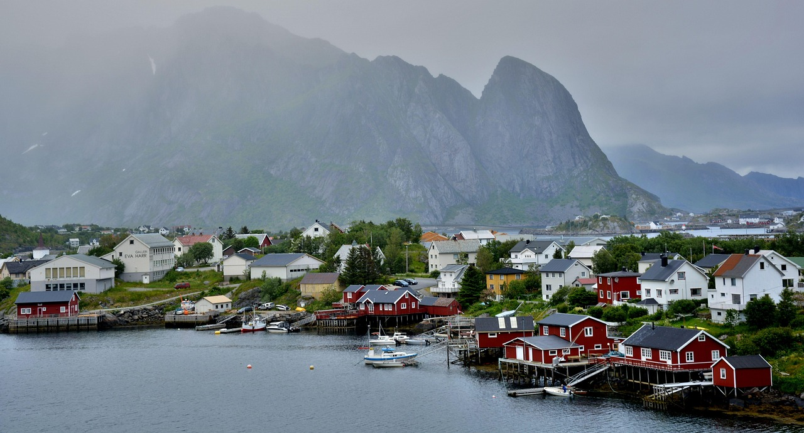
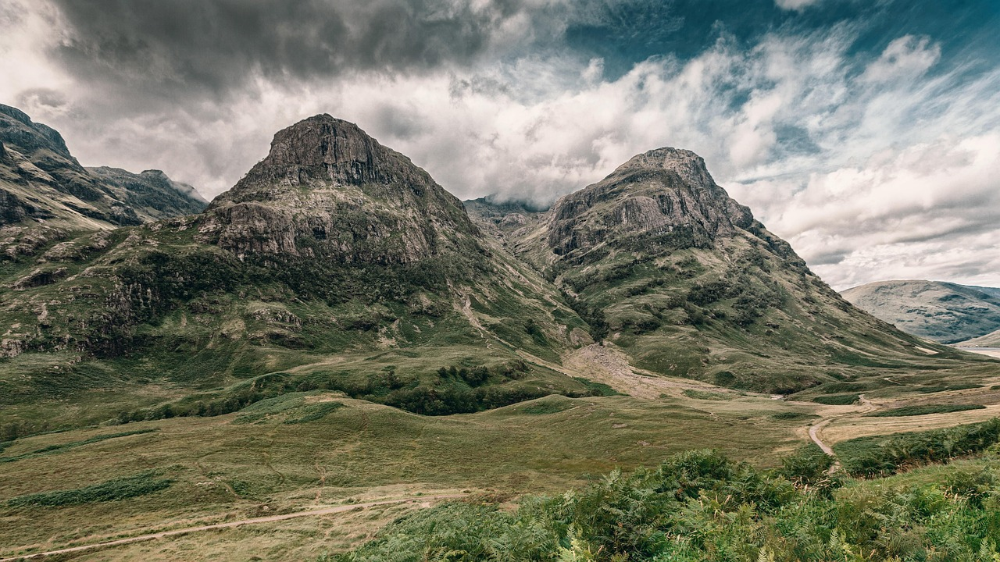

68.2088°N · Lofoten, Norway
Sea Kayaking the Fjords
Paddle between fishing villages, sheltered coves and granite peaks rising directly from the Norwegian Sea.
- 6 days
- Moderate
- From £1,850
68.2088°N · Lofoten, Norway
Small-group expeditions through the wild edges of Scotland, Norway, Iceland and the Faroe Islands. Led locally, with no more than eight people.

Selected expeditions · 2026
Four landscapes shaped by weather, water and latitude. Each journey is led by people who know the ground beneath their feet.

68.2088°N · Lofoten, Norway
Paddle between fishing villages, sheltered coves and granite peaks rising directly from the Norwegian Sea.

65.7500°N · Westfjords, Iceland
Cross isolated passes and high plateaux through one of Iceland's quietest and least-travelled regions.

62.0079°N · Faroe Islands
Travel on foot through exposed headlands, quiet valleys and Atlantic weather, carrying everything needed for the journey.

57.1200°N · Scottish Highlands
Winter walking, remote bothies and long northern nights beneath some of Scotland's darkest skies.

The FurtherNorth way
We have capped every departure at eight guests since 2011. It gives our guides the freedom to change pace, choose quieter routes and work with the landscape rather than a timetable.
Every departure is capped at eight guests. No merging groups, no second minibus and no disappearing into a crowd at the trailhead.
Our guides live and work in the regions they lead. Local knowledge shapes the route, the pace and when it is worth changing the plan.
We favour local suppliers, low-impact stays and smaller-scale transport, and offset the carbon emissions we cannot avoid.
Before you head north
Remote does not have to mean uncertain. Every expedition comes with clear guidance on fitness, equipment, travel and what to expect when you arrive.
Every trip has a clear difficulty grade, with honest guidance on daily distances, terrain and the level of fitness you will need.
Your guide, accommodation, local transport and any specialist equipment are detailed before you book. No vague extras once you arrive.
We give you a clear meeting point and practical advice for reaching it by public transport, ferry or the shortest sensible connection.
You will receive a trip-specific kit list and guidance on northern weather, including what we provide and what is worth bringing yourself.

From the field
“There was never a sense of being hurried through a checklist of places. We had time to understand where we were, and enough flexibility to follow the weather rather than fight it.”
Field fragments
Notes from 57°–68° north


